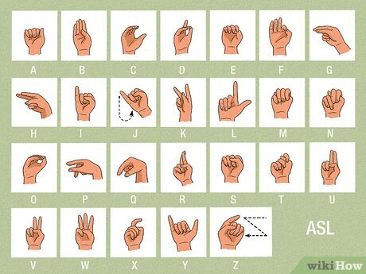

Sign Language Interpreter
A Flask and machine learning project that detects hand landmarks, predicts ASL letters, and builds text from stable gesture predictions.

Project Architecture
Core Pieces
HTML, CSS, and JavaScript open the camera, capture frames, and display predictions.
Flask receives browser frames, decodes them with OpenCV, and returns prediction JSON.
MediaPipe extracts normalized landmarks, then a Random Forest classifier predicts A-Z letters.
Training Workflow
Capture gesture images with the webcam using collect_imgs.py.
Create landmark features and labels with create_dataset.py.
Train the classifier with train_classifier.py.
Run the Flask app or the optional local OpenCV inference script.
Run Locally
GitHub Pages hosts this static project page. The live interpreter needs Python, Flask, OpenCV, MediaPipe, and webcam access from a running backend.
python -m venv venv .\venv\Scripts\Activate.ps1 pip install -r requirements.txt python app.py
Open http://127.0.0.1:5000/ after the Flask server starts.